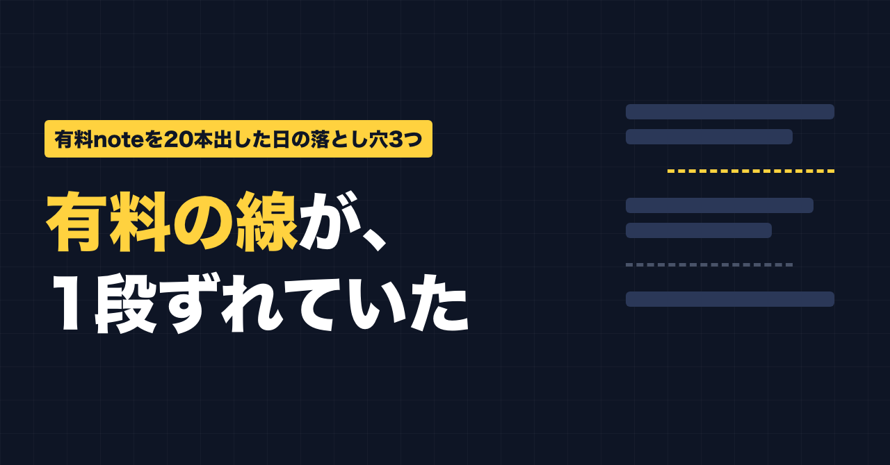
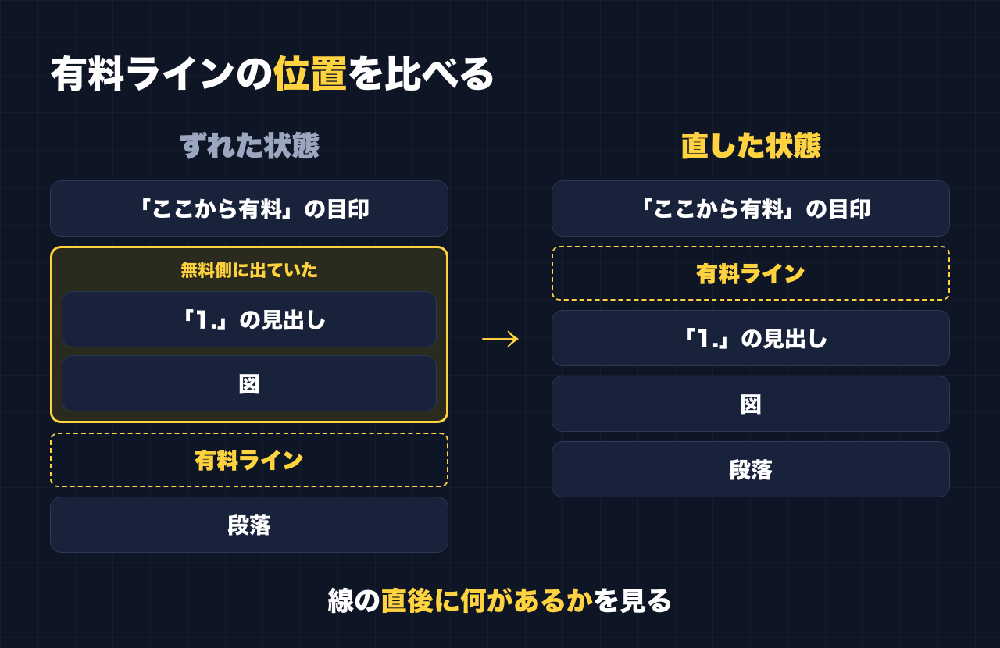

1. タイトルをコピーして、note のタイトル欄に貼る
2. 「本文1をコピー」から順にコピーし、note の本文に貼る
3. 青いラベルの位置に、images フォルダの同じ名前の画像を入れる（本文には貼られません）
※ 見出しが普通の文字になった場合は、その行を選んで「大見出し」を設定してください

有料の線が、1段ずれていました。
2026年9月29日、有料6本・無料14本、あわせて20本の note を公開しました。作業は AI（Claude）に頼み、Chrome を操作して下書きの入力から公開まで進めてもらいました。
公開したあと、有料記事の「ここから有料」の線が実際にどこに入っているかを確かめました。すると3本で、有料の側に入れるつもりだった最初の見出しが、無料で読める側に出ていました。そのうち2本は、図も一緒に出ていました。
この日に踏んだ落とし穴は、全部で3つです。有料 note を出す人が同じところでつまずかないように、起きたことと、公開前のチェックリストをまとめます。
落とし穴1：有料ラインが「見出しの後ろ」に入っていた
何が起きたか
下書きには、有料部分を始めたい場所に「ここから有料」という文字の目印を入れていました。
有料ラインを設定するときは、「目印の次の段落の前」に線を置く、というやり方で進めてもらいました。
ところが、目印のすぐ後ろにあったのは段落ではなく、見出しでした。2本では、見出しのあとに図もありました。
その結果、線は見出し（と図）を飛び越えて、その次の段落の前に入りました。有料部分の最初の見出しと図が、無料で読める側に残ってしまったわけです。

どう気づいて、どう直したか
気づいたのは、公開したあとです。線が実際にどの要素の前にあるかを1本ずつ確かめて、ずれを見つけました。
直し方は、記事を編集して、線を「1.」の見出しのすぐ前に移し、「更新する」を押すだけでした。
教訓
線を置いたら、「線のすぐ後ろにあるのが何か」を確かめる。
「目印の次」と決めても、次に来るのが段落とは限りません。見出しかもしれないし、図かもしれない。線を置いた場所ではなく、線の直後に何があるかを見るのが確実です。
落とし穴2：本文の色の番号が、勝手にハッシュタグになった
何が起きたか
1本の記事の本文に、画像の色を説明するための色の番号が入っていました。「＃FFFFFF」や「＃0E1525」のような、シャープ記号から始まる書き方です。
（この記事では、同じことが起きないように全角の「＃」で書いています。）
公開したあとで確かめると、note がこれを自動でハッシュタグにしていました。数えると6つです。
どう直したか
記事を編集し直して、公開設定の画面で自動で付いたハッシュタグを外し、「更新する」で直しました。
教訓
本文に「#」から始まる英数字があると、ハッシュタグとして拾われることがあります。色の番号や、プログラムの一部を本文に書く人は、公開設定の画面でハッシュタグ欄を必ず見てください。
落とし穴3：ハッシュタグを入れても、入っていないことがあった
何が起きたか
ハッシュタグ欄に言葉を入れて、すぐに Enter を押すと、登録されないことがありました。少し待ってから Enter を押す必要がありました。
1件は、2つのハッシュタグにするつもりの言葉が「副業発信」のように1つにつながっていました。
教訓
ハッシュタグを入れたら、1つずつ、ちゃんと分かれて登録されているかを見る。つながっていたら、消して入れ直す。
公開前・公開後のチェックリスト
今回のことをもとに、チェックリストにまとめました。有料 note を出す人は、そのまま使ってください。
有料ラインを置いたら
- 線のすぐ後ろにある要素は何か（段落／見出し／図）を確かめる
- 有料にしたい最初の見出しが、線より後ろにあるか
- 図や画像が、無料側に取り残されていないか
- 無料側の最後が、読者が「続きを読みたい」と思える位置で終わっているか
公開設定の画面で
- ハッシュタグ欄に、自分が入れていないものが増えていないか
- 本文に「#」から始まる英数字（色の番号など）がないか
- 入れたハッシュタグが1つずつ分かれて登録されているか（つながっていないか）
- 価格が合っているか
公開したあとに
- 有料記事を、読者と同じ画面で開いて、無料で見える範囲の最後を確かめる
- ずれていたら、編集で線を動かして「更新する」を押す
AIに任せても、確認は残る
今回は、下書きの入力から公開まで、作業はほとんど AI に任せました。そのおかげで20本を1日で出せました。
でも、3つの落とし穴は、どれも「やったつもり」と「実際の状態」がずれていたものです。見つけられたのは、公開したあとに実際の位置を確かめたからでした。
作業を任せる人ほど、最後の確認だけは自分の目で（または、確認そのものを頼んで）やっておくのがいいと思います。
最後に
ここからは宣伝です。
公式LINEでは、「特典」と送っていただくと、LINE限定のプロンプト5本をお届けしています。
https://lin.ee/RzyA13P
「副業ドラフト」は、AI の質問に答えるだけで、副業に使える強みの棚卸しと Threads の下書きを作るツールです。Threads の下書き3本までは無料で使えます。
https://note-threadssf.onrender.com
Threads では、こうした試行錯誤を日々発信しています。
https://www.threads.com/@shachiku_mao
最後まで読んでいただき、ありがとうございました。